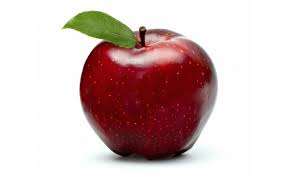

Hi, I am Alessandro, and I study computer science at USI, I am 20 years old.
I am passionate of sports and music, I often go doing climbing and mountain climbing. I also do
ski and rowing. I begun my passion for sports in the first year of high school,
although my father transmitted to me the passion for mountain. Here at the side you can see
the highest mountain in Tessin, that I climbed last year.

Here is a picture of an apple, (Malus domestica),
fruit of the domesticated tree Malus domestica (family Rosaceae),
one of the most widely cultivated tree fruits. The apple is a pome (fleshy) fruit,
in which the ripened ovary and surrounding tissue both become fleshy and edible.
The apple flower of most varieties requires cross-pollination for fertilization.
When harvested, apples are usually roundish, 5–10 cm (2–4 inches) in diameter,
and some shade of red, green, or yellow in colour; they vary in size, shape,
and acidity depending on the variety.